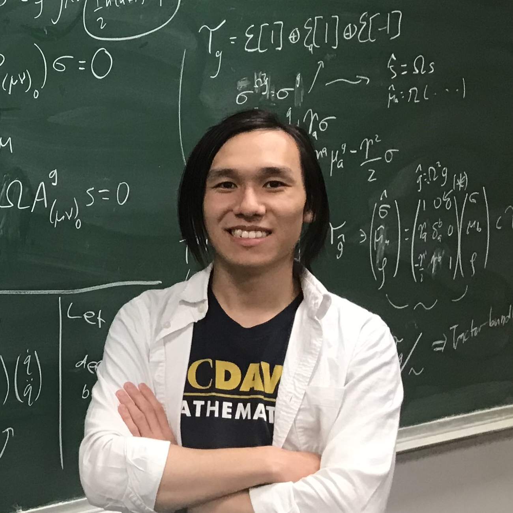

Arthur Jiang
awjiang@ucsb.edu
About Me
I am a maths PhD student at UC Santa Barbara. I obtained a B.S. in Mathematics, a B.S. in Physics, and a minor in Education from UC Davis in 2024.
awjiang@ucsb.edu
I am a maths PhD student at UC Santa Barbara. I obtained a B.S. in Mathematics, a B.S. in Physics, and a minor in Education from UC Davis in 2024.